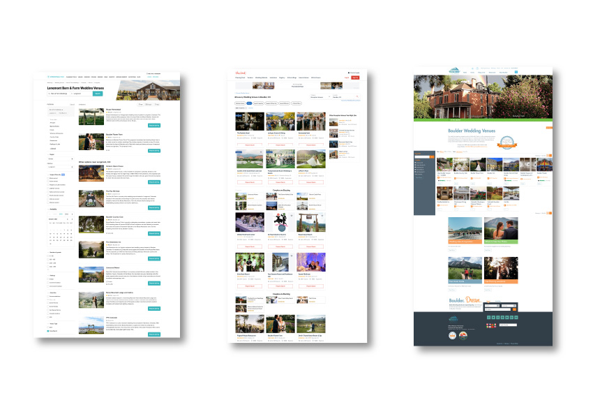
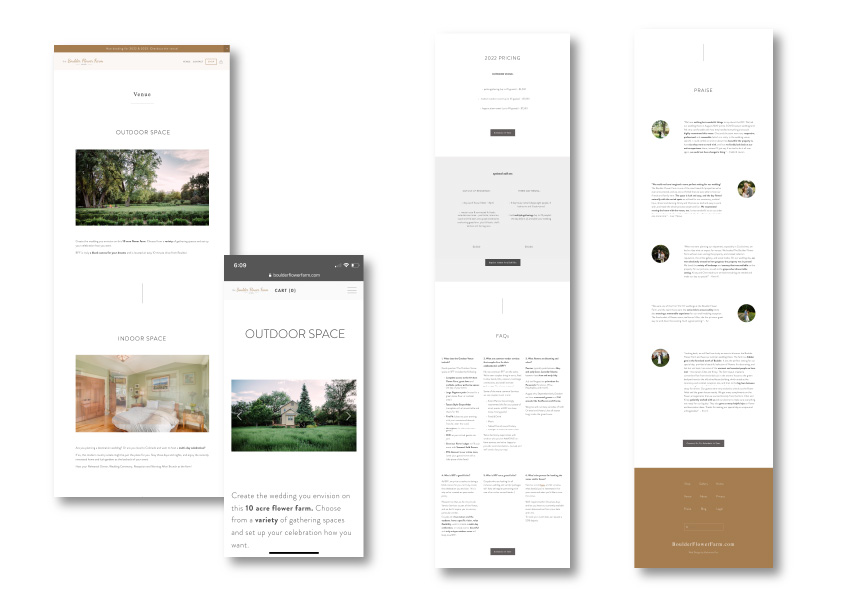

The Boulder Flower Farm is owned by the parent company, The Fresh Herb Co (TFHC), which is an established wholesale flower and herb farm located in Boulder County, CO. The TFHC founders wanted a new reccuring revenue stream that required little to no physical labor. This new revenue stream became the Boulder Flower Farm, a high-end wedding venue business. A new brand, website and marketing strategy was needed.
This project included 5 phases: Research and Branding, Visual Design, Website Build, Marketing Strategy and Implementation, and Customer Experience.
The Process
Phase I: Brand Identity
I focused the first phase of the BFF project on understanding the product, identifying what made the venue unique, and who the target client would be.

Market Research
I engaged in extensive market research including: interviewing the founders and grower, interfacing with their existing customers, participating in the daily farm operations (delivering wholesale herb and flower orders), researching competing venue spaces, and speaking with vendors who had previously participated in putting on events at the farm.
Results: Through this process, I identified five unique selling points, the brand values, and ideal customer.
To develop the visual brand identity, I completed three distinct steps: Choosing the Brand Colors and Fonts (aka creating the brand’s Style Guide), Creating the Brand Name and Tagline, Designing the Logo and Favicon.
Step 1: Choosing the Brand Colors & Fonts
Given the product (mid to high-end wedding venue), target clientele (engaged 25-35 year old females), and nature of the farm (lots of vibrant floral colors); I intentionally chose a neutral, modern and feminine color palette and fonts. Keeping with a neutral color palette was important because I wanted the colorful flower-filled photography to take center stage. I didn’t want the brand colors to distract from the photos we would use to showcase the farm’s vibrant, natural beauty.
For the fonts, I chose a feminine Script font (to be used in the logo), a classic Serif font for headers (a nod to the historical element of the farm) and a Sans Serif that would be modern and easy to read for the primary text.
Step 2: Creating the Brand Name
Creating the brand name, the Boulder Flower Farm, was simple after the extensive research completed during Phase I.
Result: with the intention to communicate, one, what the product was, and, two, why it was so special - I ideated the name “The Boulder Flower Farm” and the tagline “A True Colorado Venue.”
Step 3: Designing the Logo & Favicon
For the Logo and Favicon, I chose Dancing Script (a script font) and Raleway (a sans serif font). I intentionally used the script font as the primary logo font because it felt feminine, beautiful and classic. I also used a little bit of Raleway font in the logo to add a modern edge.
I used the Golden brown color in both the logo and favicon to reflect the luxurious aspect of the brand. I did not use any illustrations in the logo, but did incorporate “est 1983” to reflect the longevity, and authenticity of the farm (one of the USPs identified in Phase I). The date added a classic and trusted feel to the logo.
Tools Used: Illustrator, In Design, Moo.com
Phase III: Website Design
There were five steps to create the website. First, was identifying the site goals. Next was choosing a website platform. Then was designing the UX and UI. And, lastly, was completing the Copywriting.

Step 1: Identifying the Site Goals
As with any effective website, it was crucial to collaborate with the team first, and identify the primary site goal(s). Did we want to sell flowers on the website? Build an email list? Or drive people to our social media? Together, we landed on the following primary site goal: for site visitors to inquire about booking the venue through the contact page.
Result: each decision I made regarding the site layout and the content was to clearly communicate: who and how we can serve, and then to guide the site visitors who were our ideal customers to click the “Contact” button and send an inquiry.
Step 2: Deciding on a Website Platform
The parent company website was built on Wordpress, which proved to be a poor fit for the company. The owners had difficulty making small, but necessary updates to the site. So the site became outdated quickly. And the company paid an outside agency monthly to update the plugins as necessary and keep the site secure. Consequently, the criteria for choosing a platform for the new website was the following: must be simple to make copy and images updates, no need to manage security issues, no need to make technical updates to maintain the functionality of the site.
Result: Given the above criteria and the relatively simple functionality needed to achieve the site goals, I chose to build the site on Squarespace.
Step 3: Designing the UX:
I needed to create a site that would engage site visitors, peak their interest, create demand and ultimately an inquiry. To do this, I was strategic in how I set up the: site map, header and footer navigations, flow of each page, and calls to actions.
The site map included the following pages: Home, Venue, Flowers, Praise, Contact, About, Gallery, Blog, Events, FAQ, Legal, Privacy.
The header navigation was limited to only four pages: Venue, Flowers, Praise, and Contact. The Contact page has a different button style to capture the site visitor’s attention.
The remaining 8 pages, which were not as critical to achieving the site goal were included in the footer navigation.
The Homepage, which would be the most important and frequently visited page was focused on communicating What the Brand Is and Who it serves. I relied heavily on strategically placed photography and short, clear copy to achieve this.
The first banner image on the homepage as well as the short intro copy clearly communicate What the Brand is and Who it’s for. Each subsequent Homepage section highlights one of the Unique Selling Propositions identified in Phase I via the Image and Copy, and includes a clear Call-To-Action to drive the site visitor to learn more about the Venue and ultimately send an inquiry.
Results: an average of xxx inquiries per season.
Step 4: Designing the UI:
Given the brand values {feminine, high-end (white glove experience), ultimate flexibility/ease)} and keeping the ideal customer in mind, it was important to keep the UI, clean, modern and feminine.
The biggest challenge when it came to creating the UI was the photography. The owners had some professional photography, but there were huge gaps in the images needed to effectively showcase the property. Finding a local photographer (looking at portfolio and getting quotes).........Created shot lists and had photographer come out to the farm and to each of the farmers markets at different times of the year.
Step 5: Copywriting:
As with any website I focused on keeping the copy short, clear, and conversational. I focused on speaking directly to the ICA - speaking into their needs, hopes and desires (being empathetic and ultimately making the copy about them).
Given that I fall into the demographic of the Ideal Customer, I had a leg up with tone and how to speak the ICA’s language.
The most important and significant challenge for me in writing the copy was to make sure that I integrated foundational copywriting strategies with the heart and essence of the farm.
Being thorough with my research in Phase I gave me a well of first and second hand information to draw on and weave into the copy.
Results: I think the best example of integrating effective copywriting principles with the heart and essence of the farm is the Meet the Grower page. Check it out here to learn more about the grower’s values and inspiration for farming!
Tools Used: Wireframing, HTML5, CSS3, Squarespace
Phase IV: Digital Marketing
The BFF marketing strategy included five methods. And was an ongoing process of creating a plan, testing it, and making optimizations based on budget, available resources, and what the market did and didn't respond to.
There were two initial challenges. One, the advertising budget was less than $10k. And, two, was getting stakeholder buy-in to implement digital marketing in addition to traditional marketing methods.
Here's the initial plan I implemented:
Method 1: Marketing Collateral and Farmers Markets
The first action item was to inform the audience that TFHC was already interfacing with about BFF. To do this, I designed business cards and a flyer to be handed out and displayed at their local weekly farmers markets stands.
Method 2: Wedding Wire and The Knot Listings
The second method was to create listings on Wedding Wire and the Knot (Wedding Pro). Wedding Pro quoted significant traffic to our listing, and one booking would pay back the investment.
Unfortunately, Covid hit the month after we signed up. And so many couples were not looking to book venues for the 2020 season.
Our listings through Wedding Pro boosted our SEO and helped us get the word out quickly about BFF.
We booked at 50% capacity our first wedding season, which was also Covid.
Results: Even though we made back our investment back and then some, we decided not to renew with Wedding Pro. We found that most of our bookings came through Google, Instagram and local Wedding planners. And so we focused further on these marketing channels.
Tools Used: The Knot, Wedding Wire
Method 3: SEO
It takes time to see results with SEO. However, it's been a powerful tool for BFF.
There were three key pieces to my SEO strategy. Keyword search, on-page SEO and off-page SEO.
For on-page SEO, I focused on integrating keywords into the BFF website copy and URLs.
For off-page SEO, I focused on link building with relevant external sites such as venue directories, and local event planners. I also created and maintained a Google My Business account.
Result: Today, direct search is the highest source of traffic to the BFF site.
Tools Used: Google Search, Google Analytics, MOZ.com
Method 4: SEM
The keyword research I did for SEO was also critical for SEM. I drew on both the research I did in stage one and the keywords I identified in stage 4 to incorporate the 5 USPs into the copy for each paid ad. We tested a variety of copy and targeting based on age, sex, interest and location. And found that X performed best.
Result: ...
Tools Used: Google Search, Google Analytics, MOZ.com
Method 5: Social Media & Partnerships
I focused in on one social media platform and used it strategically in a way you might not anticipate. Instead of going for quantity and frequency (number of posts and followers), I built the account slowly and strategically as a virtual gallery, storefront and business card. This strategy proved to be a powerful networking tool for building brand and business partnerships.
Results: Today with only 1,500 followers, most of our industry partnerships (over 50) have come from social media. These resulted in both national and regional media placements including MarthaStewart.com.
Tools Used: Instagram, Facebook, Planoly
Method 6: Reviews
Reviews are an ongoing and integral part of the marketing strategy. Without social proof, it's more difficult to establish trust with site visitors and potential customers.
With this in mind, I carefully and thoughtfully follow up with each client who has or has had an event at the farm asking for feedback, and if they had enjoyed their experience, if they would be willing to write some kind words about it and post it on various platforms in which I provided the links.
Results: Ninety percent of clients take the time to provide positive reviews. Several of which I have added to the website's sales page.
Tools Used: Google My Business, Wedding Pro, Illustrator
Phase V: Customer Experience
The customer experience was a critical part of BFF. Being friendly, kind, generous, professional, timely and consistent with attention to detail were all vital aspects of the brand.
Results: To assure these values were woven into each customer interaction, I co-wrote and/or copy-edited each customer touch point including the: website copy, marketing copy, customer response templates, sales contracts, and house information/rule book, and thank you notes. This also simplified and streamlined the customer service process.
Hydrosols Project
To further create a valuable and memorable customer experience, we developed custom hydrosols made with lavender and herbs from the farm to gift to the BFF clients.
This project required product research to write clear, compelling copy for the product labels and descriptions so that the BFF clients would understand what these products were, how use to them and why they were so special.
Part of this research involved working with the grower and product developer.
Results: six custom BFF branded Hydrosols (lavender - lrg and sml, sage - lrg and sml, rosemary - lrg and sml), branded thank you notes and gift packages for each BFF client.
Tools Used: Photoshop, Illustrator, InDesign, Google Suite
Results
Developed a new brand (The Boulder Flower Farm) and grew a new line of revenue, increasing the parent company's overall yearly business profitability by 20%. Fully booked out the venue, the first and second season post-Covid.